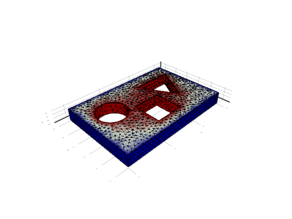

p-Laplacian (manual assembly)

Problem statement
We solve the same problem as in the p-Laplacian example, but in this case we explicitly write the numerical integration loops.
Implementation
Load dependencies form Julia stdlib.
using LinearAlgebraImport other dependencies
import GalerkinToolkit as GT
import PartitionedSolvers as PS
import ForwardDiff
import GLMakie as MakieSetup the objects defining this example
function setup_example(;file)
assets_dir = normpath(joinpath(@__DIR__,"..","..","..","assets"))
msh_file = joinpath(assets_dir,"model.msh")
mesh = GT.mesh_from_msh(msh_file)
dirichlet_0_names = ["sides"]
dirichlet_1_names = ["circle", "triangle", "square"]
Ω = GT.interior(mesh)
Γ0 = GT.boundary(mesh;physical_names=dirichlet_0_names)
Γ1 = GT.boundary(mesh;physical_names=dirichlet_1_names)
Γd = GT.piecewise_domain(Γ0,Γ1)
g0 = GT.analytical_field(x->-1.0,Ω)
g1 = GT.analytical_field(x->1.0,Ω)
g = GT.piecewise_field(g0,g1)
k = 1
V = GT.lagrange_space(Ω,k;dirichlet_boundary=Γd)
T = Float64
uh = GT.rand_field(T,V)
GT.interpolate_dirichlet!(g,uh)
degree = 2*k
dΩ = GT.measure(Ω,degree)
example = (;mesh,Ω,dΩ,V,uh,T,g,file)
state = (;example)
endCreate accessor functions for low-level integration quantities.
function setup_integration_accessors(state)
(;dΩ) = state.example
face_point_x = GT.coordinate_accessor(dΩ)
face_point_J = GT.jacobian_accessor(dΩ)
face_point_dV = GT.weight_accessor(dΩ)
face_npoints = GT.num_points_accessor(dΩ)
integration = (;
face_point_x,face_point_J, face_point_dV,face_npoints)
(;integration,state...)
endCreate accessor functions for low-level interpolation quantities.
function setup_interpolation_accessors(state)
(;dΩ,Ω,V,uh) = state.example
face_dofs = GT.dofs_accessor(V,Ω)
face_point_dof_s = GT.shape_function_accessor(GT.value,V,dΩ)
face_point_dof_∇s = GT.shape_function_accessor(ForwardDiff.gradient,V,dΩ)
interpolation = (;face_dofs,face_point_dof_s,face_point_dof_∇s)
(;interpolation,state...)
endDefine the algebraic non-linear problem object
function setup_nonlinear_problem(state)
(;example) = state
(;V,Ω,dΩ,T,uh) = example
#Get initial guess
x = GT.free_values(uh)
#Create accessor for the field gradient
face_point_∇uh = GT.discrete_field_accessor(ForwardDiff.gradient,uh,dΩ)
#Allocate auxiliary face matrix and vector
n = GT.max_num_reference_dofs(V)
Auu = zeros(T,n,n)
bu = zeros(T,n)
#Allocate space for the global matrix and vector
b_alloc = GT.allocate_vector(T,V,Ω)
A_alloc = GT.allocate_matrix(T,V,V,Ω)
#Fill in residual and jacobian according to the initial state
allocs = (;A_alloc,b_alloc,Auu,bu)
fill_residual_and_jacobian!(state,allocs,face_point_∇uh) # Defined later
#Compress matrix and vector into the final format
b,b_cache = GT.compress(b_alloc;reuse=Val(true))
A,A_cache = GT.compress(A_alloc;reuse=Val(true))
#Build the nonlinear problem object
workspace = (;state,face_point_∇uh,allocs,b,b_cache,A,A_cache)
problem = PS.nonlinear_problem(update_problem,x,b,A,workspace)
(;problem,state...)
endNon-linear problem update function. The input problem is in an inconsistent state: residual(problem) and jacobian(problem) are not synchronized with solution(problem). The goal of this function is to update the residual and jacobian for the current solution guess.
function update_problem(problem)
#Unpack workspace
(;state,face_point_∇uh,allocs,b,b_cache,A,A_cache) = PS.workspace(problem)
(;A_alloc,b_alloc,Auu,bu) = allocs
(;example) = state
(;uh) = example
#Get the current solution vector
x = PS.solution(problem)
#Build the current solution field
uh = GT.solution_field(uh,x)
#Update the accessor
face_point_∇uh = GT.update(face_point_∇uh,discrete_field=uh)
#Fill in residual and Jacobian
fill_residual_and_jacobian!(state,allocs,face_point_∇uh)
#In-place compression of matrix and vector
GT.compress!(b_alloc,b,b_cache)
GT.compress!(A_alloc,A,A_cache)
#Update the nonlinear problem object
#Here, we computed the residual and Jacobian simultaneously,
#but this API also allows to compute them separately.
if PS.residual(problem) !== nothing
problem = PS.update(problem,residual=b)
end
if PS.jacobian(problem) !== nothing
problem = PS.update(problem,jacobian=A)
end
problem
endAssembly loop
function fill_residual_and_jacobian!(state,allocs,face_point_∇uh)
(;A_alloc,b_alloc,Auu,bu) = allocs
(;example) = state
(;Ω,) = example
#Reset allocations
GT.reset!(b_alloc)
GT.reset!(A_alloc)
#Loop over the faces of the domain
for face in 1:GT.num_faces(Ω)
#Compute face tensors
dofs = face_tensors!(Auu,bu,face,state,face_point_∇uh) # Defined later
#Add face contribution to global allocation
GT.contribute!(b_alloc,bu,dofs)
GT.contribute!(A_alloc,Auu,dofs,dofs)
end
endCompute local Jacobian and residual
function face_tensors!(Auu,bu,face,state,face_point_∇uh)
(;example,integration,interpolation) = state
#Define flux and its derivative
q = 3
flux(∇u) = norm(∇u)^(q-2) * ∇u
dflux(∇du,∇u) = (q-2)*norm(∇u)^(q-4)*(∇u⋅∇du)*∇u+norm(∇u)^(q-2)*∇du
#Get quantities at current face
npoints = integration.face_npoints(face)
point_J = integration.face_point_J(face)
point_dV = integration.face_point_dV(face)
point_dof_∇s = interpolation.face_point_dof_∇s(face)
point_∇uh = face_point_∇uh(face)
dofs = interpolation.face_dofs(face)
#Reset face matrix and vector
fill!(Auu,zero(eltype(Auu)))
fill!(bu,zero(eltype(bu)))
#Loop over integration points
for point in 1:npoints
#Get quantities at current integration point
J = point_J(point)
dV = point_dV(point,J)
dof_∇s = point_dof_∇s(point,J)
∇uh = point_∇uh(point,J)
#Fill in face matrix and vector
for (i,dofi) in enumerate(dofs)
∇v = dof_∇s(i)
bu[i] += flux(∇uh)⋅∇v*dV
for (j,dofj) in enumerate(dofs)
∇du = dof_∇s(j)
Auu[i,j] += dflux(∇du,∇uh)⋅∇v*dV
end
end
end
#Return dof ids for this face
dofs
endSolve and visualize results
function solve_and_visualize(state)
(;problem,example) = state
(;uh,file,Ω) = example
#Setup solver
solver = PS.newton_raphson(problem,verbose=true)
#Get the lazy solver history
solver_history = PS.history(solver)
#Visualize
color = Makie.Observable(uh)
fig = Makie.plot(Ω;color,strokecolor=:black)
fn = joinpath(@__DIR__,"fig_pt_plaplacian.gif")
Makie.record(fig,file,solver_history;framerate=2) do s
color[] = uh
end
endsolve_and_visualize (generic function with 1 method)Final program.
function main(;kwargs...)
state1 = setup_example(;kwargs...)
state2 = setup_integration_accessors(state1)
state3 = setup_interpolation_accessors(state2)
state4 = setup_nonlinear_problem(state3)
solve_and_visualize(state4)
endRun it for a 2d case
file = joinpath(@__DIR__,"p_laplacian_manual.gif")
main(;file)Info : Reading '/home/runner/work/GalerkinToolkit.jl/GalerkinToolkit.jl/assets/model.msh'...
Info : 95 entities
Info : 2151 nodes
Info : 10691 elements
Info : Done reading '/home/runner/work/GalerkinToolkit.jl/GalerkinToolkit.jl/assets/model.msh'
iterations residual solution
current target current target current target
0 1000 1.82e+01 1.00e-08 NaN 0.00e+00
1 1000 4.59e+00 1.00e-08 9.96e-01 0.00e+00
2 1000 1.26e+00 1.00e-08 4.98e-01 0.00e+00
3 1000 3.03e-01 1.00e-08 2.47e-01 0.00e+00
4 1000 5.28e-02 1.00e-08 1.17e-01 0.00e+00
5 1000 1.33e-02 1.00e-08 5.44e-02 0.00e+00
6 1000 9.65e-04 1.00e-08 1.85e-02 0.00e+00
7 1000 8.06e-05 1.00e-08 5.42e-03 0.00e+00
8 1000 1.73e-06 1.00e-08 1.03e-03 0.00e+00
9 1000 2.33e-09 1.00e-08 3.74e-05 0.00e+00This page was generated using Literate.jl.